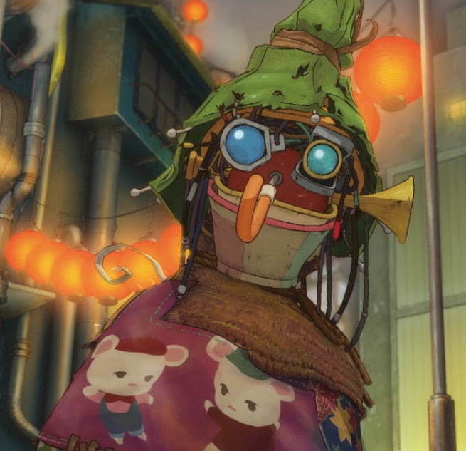

星を見よう!
ルビッチ
プペル!どうしてボタン押すと雲が消えたの？？
jqueryのfadeOutを使いました。

プペル
$('button').click(function () {
$("#kumo").fadeOut(10000); //10秒間かけて消える
})
fadeInメソッドは要素を表示し、fadeOutメソッドは要素を非表示にします。 今回はfadeOutメソッドで雲がゆっくり消えていくようにしました。 文法は 要素.fadeOut(速度);になります。
ルビッチ
プペル!星はどうやって光らせてるの？
cssのアニメーションをつかってます
プペル
@keyframes move-twink {
from {background-position:0 0;} //開始時の位置
to {background-position:-10000px 5000px;} //終了時の位置
animation:move-twink 200s linear infinite; //一定速度で繰り返す
ルビッチ
星の上で黒いもやが動いて星が消えたり点いたりしてるように見えるんだね
そうです。次はどうやって僕たちが空を飛んでるのか説明するです
プペル
function puperu() {
$("#torokko").animate({
top: "300px",
left: "-500px" //要素を戻す位置 始点
}, 0).animate({
top: "500px",
left: "1500px" //要素を動かす位置 終点
}, 20000); //20秒の間に動く
puperu(); //ループ処理
}
puperu(); //関数の呼び出し
ルビッチ
jqueryのanimateを使って動かしてるんだね
はい。animateメソッドとループ処理について説明させてください
プペル
.animate({ CSSプロパティ群}, [動作時間], [イージング], [コールバック])
animate()は、4つの引数をとります。CSSプロパティ群でアニメーション効果、動作時間でアニメーションの動作時間、イージングでアニメーションの動き方、コールバックでアニメーションが終わった後の処理をそれぞれ指定します。 animate()では、第一引数のパラメータ以外はすべてオプションです。今回は動作時間を指定しています
puperu(); //関数の中で呼び出すとループ処理される
関数は外で呼び出しているのですが、これだけだと一回の処理で終わっていました。 関数の中で呼び出してみるとループされました。関数が実行されたあとまた関数の 下で、puperu();を書くことによってまた実行されるみたいです。
ルビッチ
みんな映画観てね！
夢を持った人は感動するから観てほしいです
プペル